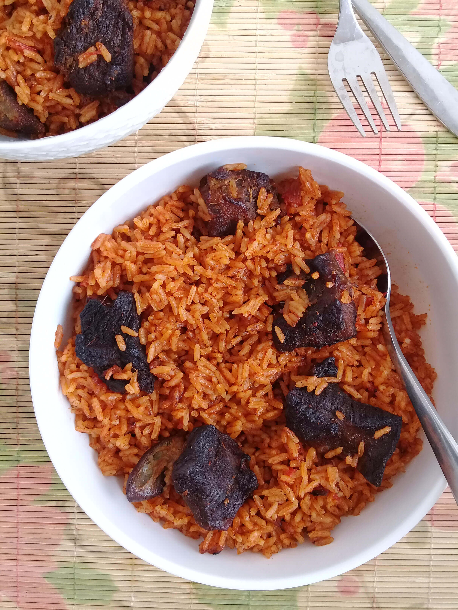

Jollof Rice

Description
Jollof-rice is an african dish that is common among the nigerians.
It is typically a mix of Rice and Tomato stew. It is preferably prepared with
meat or fish.
Ingredients
- Rice
- Beef
- Tomato sauce
- Vegetable Oil
- Onions
- Grinded Pepper
- Spices
- Water
Steps
- Cut and wash the beef
- Put in pot of water
- Add spices and allow to boil till soft
- Parboil rice
- Wash the rice in cold water
- Put rice in sift to drain water
- Put vegetable oil in another pot
- Pour in onions
- Pour in grinded pepper
- Allow to fry for 2 mins
- Add in tomato sauce
- Allow to fry for 2 mins
- Boil water in another pot
- Add spice in boiling water
- Add boiled meat water
- Add parboiled rice
- Add in fried mixture
- Allow to dry water off
- Fry beef in deep vegetable oil
- Serve rice and beef hot